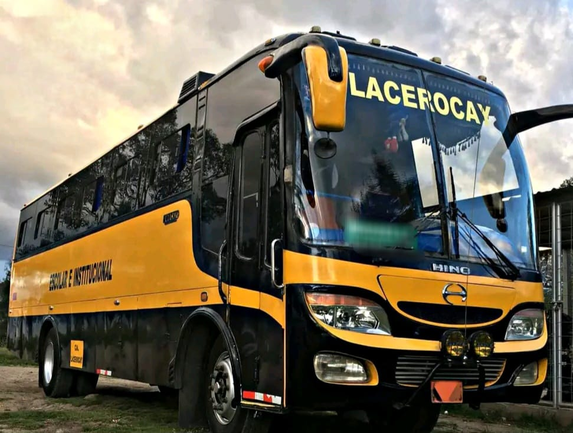

TRANSPORTE
El transporte se encarga de llevar a los estudiantes desde sus hogares hasta el colegio y viceversa, garantizando su seguridad y comodidad durante el trayecto.
1. Recoger a los estudiantes en sus hogares o paradas designadas.
2. Llevar a los estudiantes al colegio a tiempo.
3. Devolver a los estudiantes a sus hogares o paradas designadas despues de clases.
4. Transportar a los estudiantes a actividades extracurriculares o eventos escolares.
5. Grantizar la seguridad y bienestar de los estudiantes durante el trayecto.
El transporte escolar juega un papel fundamental en la experiencia educativa de los estudiantes, proporcionando un servicio seguro, cómodo y confiable.
 VOLVER A LA PAGINA...